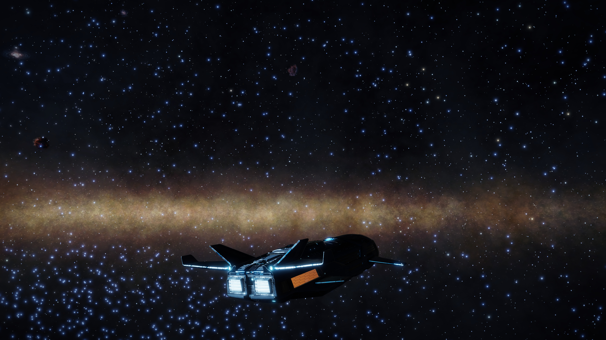
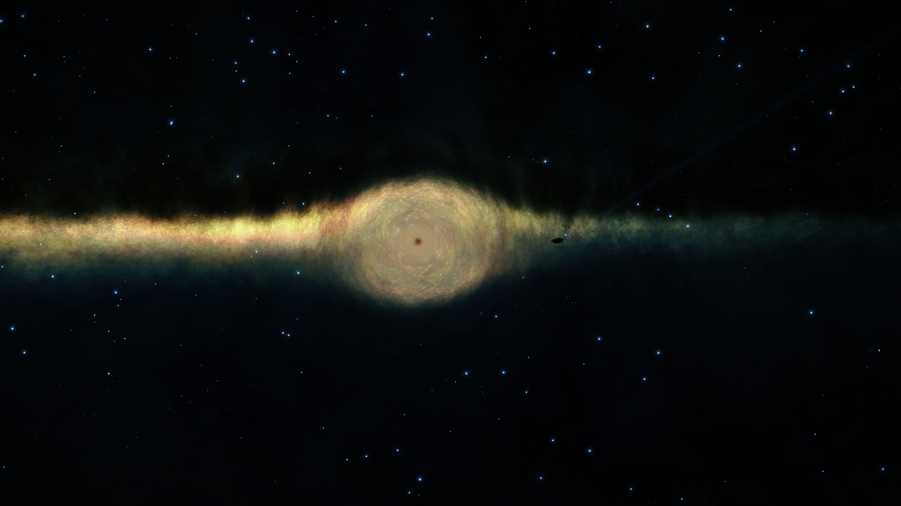
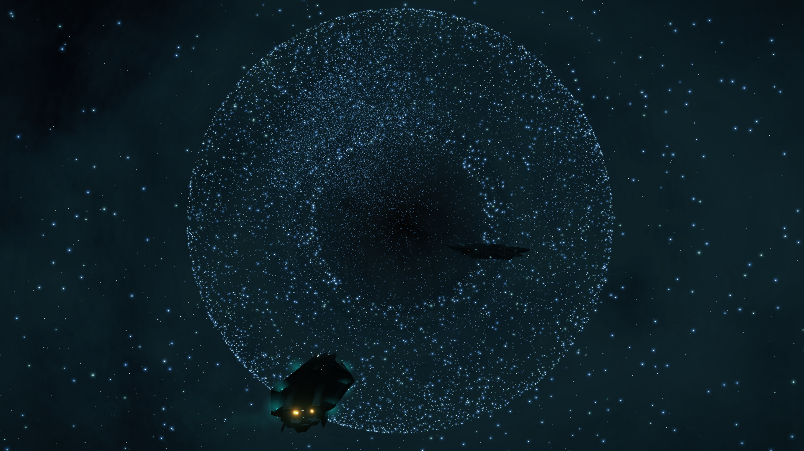
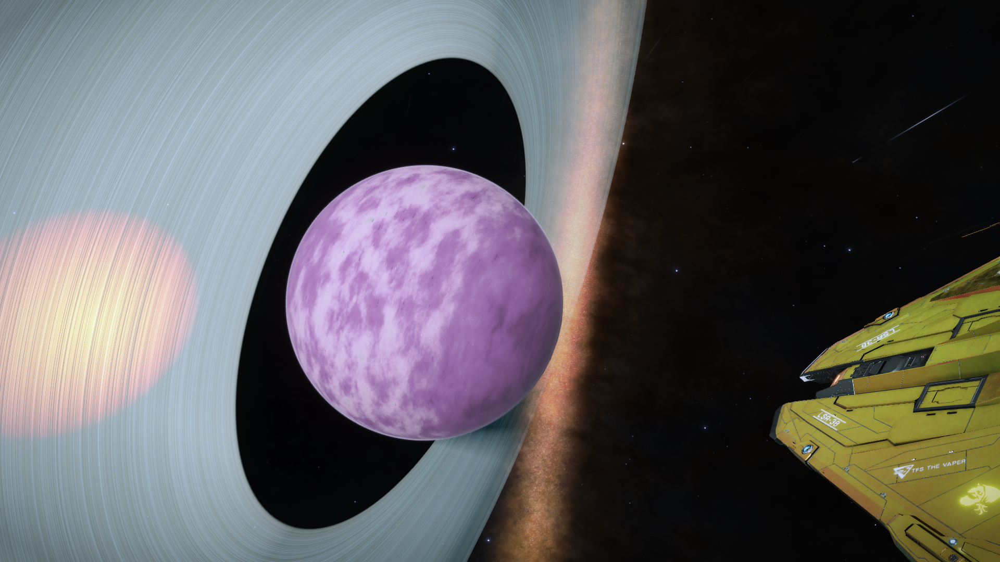
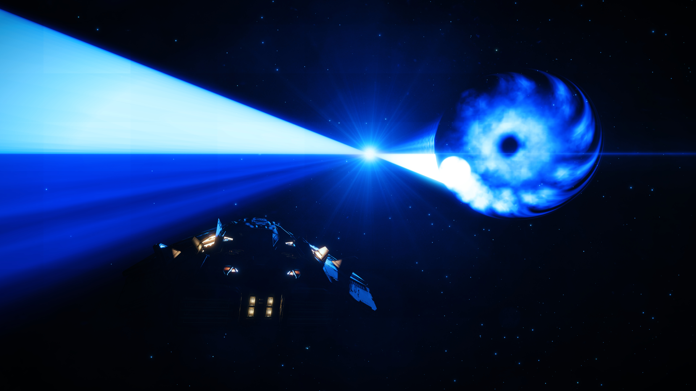
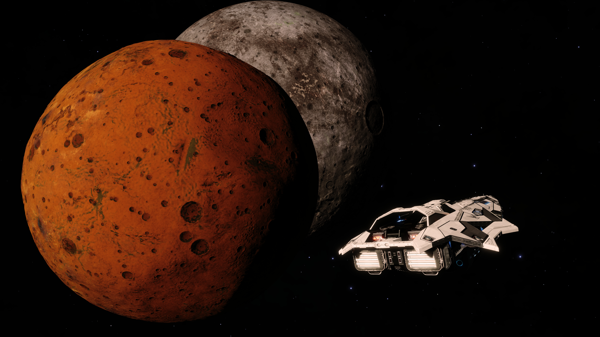

| Home | Terms | Images of the game | Learn to Mine | Links to various Resources | My Fleet |
One thing about this game is the insanely beautiful scenery that you will often encounter while out in the wilds.
These are some of the greatest photos that I have seen. They were taken by Commanders in the squadron that I am a part of.
The Commander's who took these photos are:
|  |  |
|  |  |
|  |  |